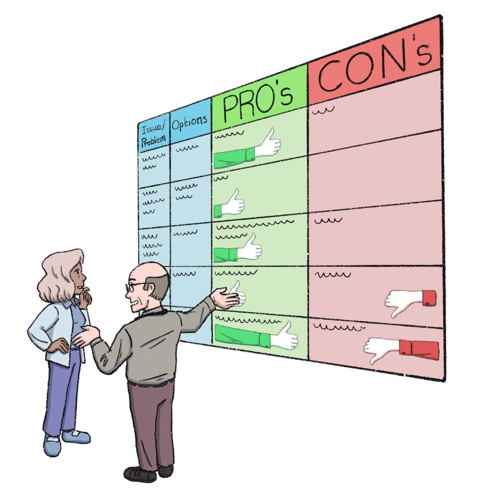

Our mission is to prepare your patients to make good personal decisions, with your support. We are busy creating new patient friendly toolkits on patientcentre.org
We use the best available evidence, presented in an accessible way. Watch, listen, read and personalise.
- Suggest that your patient might watch and listen to the relevant audio-visual. (Send them a link.) They begin to see their choices.
- Your patient can read the matching decision aid that summarises their options.
- Encourage your patient to contact you again so that you can support them to make a personal decision.
Are your appointments long enough to fully explore management options with your patients? Some patients prefer lifestyle options and some prefer to take medications.
We offer resources to improve the decisions that your patients will make, without you having to make your appointments any longer.
The audio recordings on realgeneralpractice.org are conversations with patients with a particular problem or diagnosis. I support them to make choices based on their circumstances, values, fears and wishes. I also give extra information to the listener highlighting other possible options.
Sharing these audio recordings with patients helps them to make personal decisions quickly. Usually they contact the doctor by phone to take the next steps. The decision aids help clinicians and patients by summarising all the important benefits and possible downsides of each management option.These audio recordings are proven to help patients to make informed choices quickly. Patients really like this approach. Clinicians also appreciate the decision aids that summarise the evidence of benefit and possible downsides of each choice.